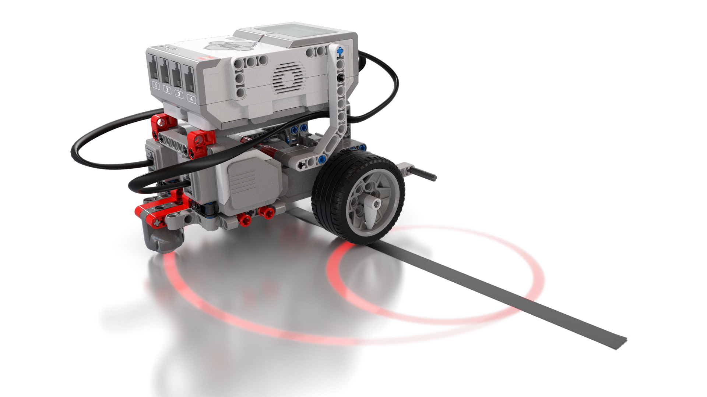
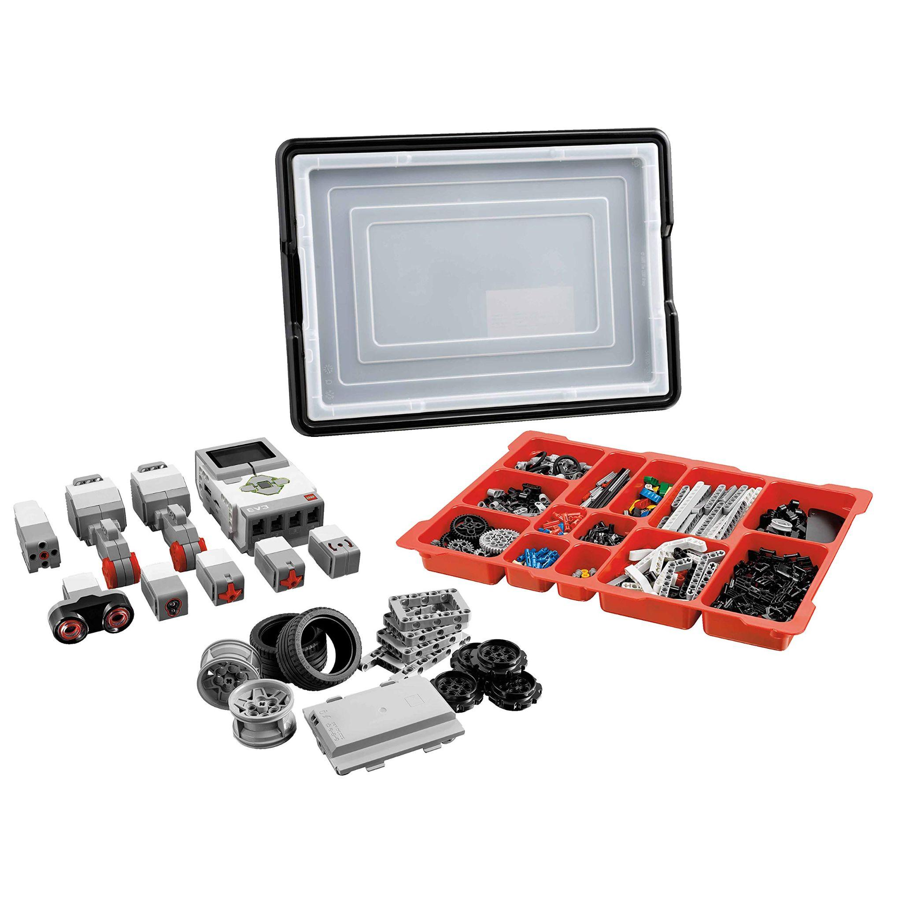
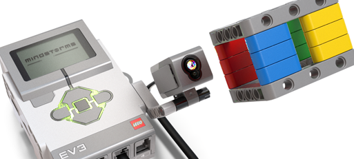

Da percepção à resposta
O que é robótica?
A robótica reúne conhecimentos de construção mecânica, eletrônica, controle e programação para projetar e operar sistemas robóticos. Em uma atividade com EV3, podemos observar esse processo de perto: sensores recebem informações do ambiente, o programa avalia condições e motores ou mecanismos produzem uma ação.
Um robô não precisa ter forma humana, usar inteligência artificial ou funcionar sem a participação de uma pessoa. Ele pode executar uma tarefa simples e previamente programada, como parar diante de um obstáculo ou seguir uma linha. O ponto central desta página é tornar observável a relação entre a leitura de um sensor, a decisão do programa e a resposta do robô.
Fonte introdutória sobre robótica e seus componentes
A resposta altera o que acontece no ambiente; o ciclo pode se repetir enquanto o programa consulta os sensores.
Hardware modular
O que compõe o kit EV3 Education?
O EV3 não é um único robô pronto: é uma plataforma programável que combina o bloco inteligente, peças de construção, sensores, motores, cabos e alimentação. No capítulo 6 da dissertação, esse conjunto é apresentado como um recurso para ligar ideias de lógica a respostas observáveis do robô.
Na edição educacional 45544 referida no capítulo, a composição de referência inclui um bloco EV3, dois motores grandes, um motor médio e cinco sensores: dois de toque, um de cor, um ultrassônico e um giroscópio. O conjunto também traz peças Technic, cabos e alimentação. Confira o inventário do kit que sua escola realmente possui, pois os conjuntos e suas edições variam.

Bloco programável
Executa o programa, recebe leituras e envia comandos aos motores. É o controlador central do protótipo.
Sensores
Convertem características do ambiente — como contato, distância e luz — em dados que o programa consegue interpretar.
Motores
Atuam sobre o ambiente: movimentam as rodas e podem acionar braços, garras ou outros mecanismos montados com as peças.
Peças, cabos e energia
Vigas, pinos, eixos, engrenagens, cabos e bateria formam a estrutura e conectam os componentes eletrônicos.
Conexão dos sensores.
Conexão dos motores.
Essa numeração é a referência do EV3 usada no capítulo 6. Anote as portas efetivamente conectadas no robô e escolha as mesmas no programa.
Construção de referência
Como montar uma base motriz
A base motriz é um ponto de partida: ela reúne o bloco EV3, dois motores que movimentam as rodas e uma estrutura firme. Depois de testar a locomoção, o grupo pode acrescentar o suporte do sensor adequado à pergunta da atividade.
-
01
Separe as peças
Use o inventário e as instruções do modelo escolhido. Agrupe vigas, pinos, eixos, rodas, motores e bloco EV3 antes de começar.
-
02
Monte o chassi
Construa os dois lados de forma simétrica e prenda os motores à estrutura. Reforce o quadro para reduzir torções.
-
03
Instale rodas e bloco
Confira o alinhamento das rodas e fixe o bloco EV3. Deixe espaço para acessar as portas e mantenha os cabos afastados das partes móveis.
-
04
Conecte e teste
Ligue cada motor a uma saída A–D e cada sensor a uma entrada 1–4. Faça um teste curto com o robô suspenso, depois confira a leitura de cada sensor.

Entradas do sistema
Quatro sensores, quatro tipos de leitura
Um sensor não “decide” o que o robô fará. Ele fornece uma leitura; o programa define como interpretá-la. O toque pode fornecer diretamente uma condição lógica, enquanto distância e intensidade de luz são valores numéricos que podem ser comparados a um limite.
Sensor de toque
Informa se o botão está pressionado ou solto; também pode reconhecer que foi pressionado e liberado. É uma entrada útil para um botão de início ou para detectar um contato.
Ele identifica o estado do botão, não mede a força nem a profundidade do toque.
Ajuda oficial sobre o sensor de toqueSensor ultrassônico
Emite ondas sonoras que não ouvimos e estima a distância até uma superfície a partir do retorno do sinal. O programa pode comparar a leitura, em centímetros ou polegadas, com um limite.
Tecidos e superfícies inclinadas podem refletir pior o som; objetos muito próximos também podem não ser detectados.
Ajuda oficial sobre o ultrassônicoSensor de cor
Pode identificar cores próximas ou medir luz refletida e luz ambiente. Uma atividade comum é perceber a diferença de luminosidade entre uma faixa escura e o piso claro.
A distância do chão e a iluminação da sala alteram as leituras; teste os valores no ambiente real.
Ajuda oficial sobre o sensor de corGiroscópio
Mede a rotação em torno de um eixo e pode fornecer o ângulo ou a taxa de rotação. Ajuda o robô a controlar giros ou a observar mudanças de orientação.
Conecte-o imóvel e na orientação indicada; a leitura pode derivar, então redefina o ângulo antes do teste quando necessário.
Ajuda oficial sobre o giroscópioDa leitura ao conectivo
Uma condição de robótica também pode ser escrita como lógica
Imagine duas condições: toque = solto e
distância > 10 cm. Se o programa mandar avançar
somente quando ambas forem verdadeiras, ele combina as condições
com AND. A distância é um número; a comparação
com 10 cm produz verdadeiro ou falso.
Instruções oficiais
Manuais para montagem da base e dos sensores
Os PDFs abaixo são instruções ilustradas de montagem da LEGO Education; cada folha mostra como construir ou acoplar um modelo ao robô. Para entender os modos de leitura e programação dos sensores, use também os guias de funcionamento em linha que aparecem nos cartões acima.
Driving Base / Base motriz
Instruções ilustradas para a estrutura motriz de referência, com rodas e dois motores.
Abrir instruções da base motriz (PDF)Sensor de toque
Peças de suporte para acrescentar o sensor de toque à base.
Abrir instruções do sensor de toque (PDF)Sensor ultrassônico
Montagem do suporte ultrassônico na base motriz.
Abrir instruções do ultrassônico (PDF)Sensor de cor
Há duas posições de montagem: voltado para baixo ou para a frente.
Sensor para baixo (PDF) Sensor para a frente (PDF)Giroscópio
Instruções para montar o sensor giroscópico na base.
Abrir instruções do giroscópio (PDF)Outros modelos e suportes
A página reúne instruções da base, dos módulos de sensores e dos modelos educacionais do conjunto.
Abrir a biblioteca oficial de instruçõesTutoriais LEGO Education
Atividades introdutórias de movimento em linha reta, movimento em curva, movimentação de objeto e comutador.
Abrir os tutoriais oficiais em portuguêsAssistir e experimentar
Vídeos curtos para acompanhar a montagem e os sensores
Os vídeos ajudam a visualizar procedimentos diferentes, mas nenhum cobre sozinho todo o kit. O player só é carregado quando você escolhe assistir; cada cartão traz uma orientação em texto para ajudar a acompanhar ou substituir o vídeo.
Montagem visual do robô-base EV3
Mostra a montagem do bloco EV3 com dois motores grandes, rodas e uma roda de apoio traseira.
Orientação equivalente em texto
- Separe o bloco EV3, dois motores grandes, rodas, eixos, vigas e pinos conforme o manual escolhido.
- Prenda os motores dos dois lados e reforce o chassi com vigas.
- Monte as rodas e o apoio traseiro; confira se a estrutura está nivelada e se as partes móveis giram livres.
O vídeo é silencioso e não mostra sensores, ligação dos cabos nem programação. Use as instruções oficiais para conferir as peças e complete o teste de portas separadamente.
O vídeo não tem narração. A montagem descrita em texto acima complementa a demonstração.
Tempo, toque e sensor ultrassônico
Explora opções de leitura e comparação dos blocos de toque e ultrassônico no software EV3 Education clássico.
Orientação equivalente em texto
- Selecione o bloco do sensor e confira a porta de entrada conectada ao robô.
- Com o toque, compare os estados pressionado, solto ou pressionado e liberado.
- Com o ultrassônico, leia a distância e escolha uma comparação, por exemplo, menor que 10 cm.
- Relacione o resultado da comparação ao comportamento desejado e teste com o sensor físico.
É uma demonstração do software; não mostra a montagem do robô nem a execução física do código.
Player sob escolha do visitante. Os controles exibidos podem variar conforme a versão do software EV3.
Sensor de cor com a função Esperar
Demonstra o bloco Esperar com cores e testa a leitura do sensor físico diante de peças coloridas.
Orientação equivalente em texto
- Adicione um bloco Esperar e selecione Sensor de Cor → Comparar → Cor.
- Defina uma cor e acrescente a resposta do robô; teste o sensor com o objeto próximo.
- Repita o procedimento com outras cores e observe quando cada condição é satisfeita.
O exemplo organiza a leitura em uma sequência fixa de cores e usa o software clássico. Para reconhecer cores em qualquer ordem, o programa precisa de outra estrutura de decisão.
Player carregado somente após escolha do visitante; a orientação escrita preserva os passos principais.
Como definir um limite para a leitura de luz
Mostra leituras do sensor de cor com luz ambiente e luz refletida e compara superfícies claras e escuras.
Orientação equivalente em português
- Escolha no bloco do Sensor de Cor o modo de luz ambiente ou refletida.
- Observe no monitor do EV3 os valores no local e na superfície que a turma usará.
- Compare as leituras e defina um limite entre elas; teste o programa antes de fixar esse valor.
O valor-limite não é universal: a iluminação, a superfície e a posição do sensor alteram a leitura.
Vídeo em inglês; a orientação escrita em português permite acompanhar a atividade sem áudio.